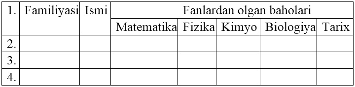
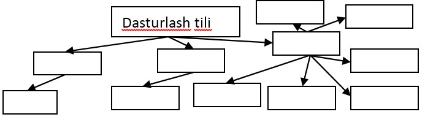
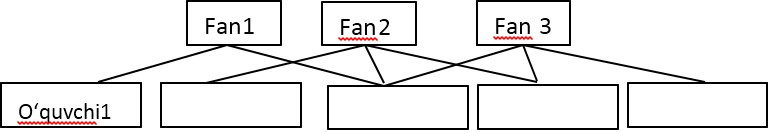
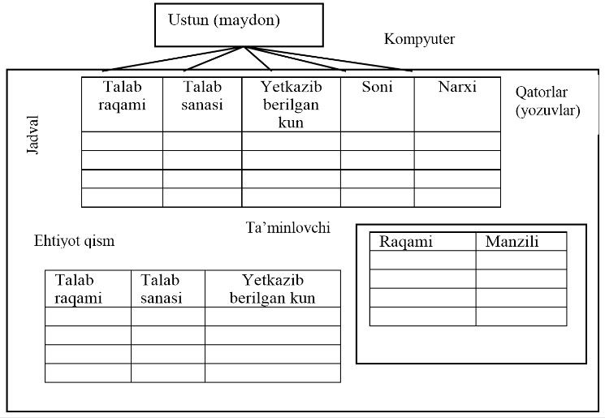

1. Sinfingiz o’quvchilari haqida MO yaratish uchun modellar yarating.
2. Quyidagi jadvalni yarating va uni sinfingiz o’quvchilari haqidagi ma’lumotlar bilan to’ldiring:

1. Quyidagi ierarxiv modelning chizmasini qog’ozga tushirib, katakchalarni to’ldiring:

1. Quyidagi tarmoqli modelning chizmasini qog’ozga tushirib, katakchalarni to’ldiring:

1. Quyidagi relyatsion modelning chizmasini qog’ozga tushirib, jadvallarni to’ldiring:

1. Ierarxiv modellarga misol keltiring va uning chizmasini hosil qiling.
2. Tarmoqli modellarga misol keltiring va uning chizmasini hosil qiling.
3. Relyatsion modellarga misol keltiring va uning chizmasini hosil qiling.